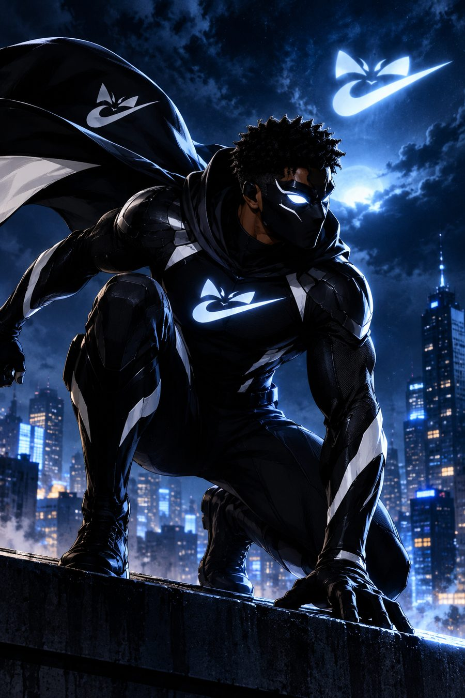
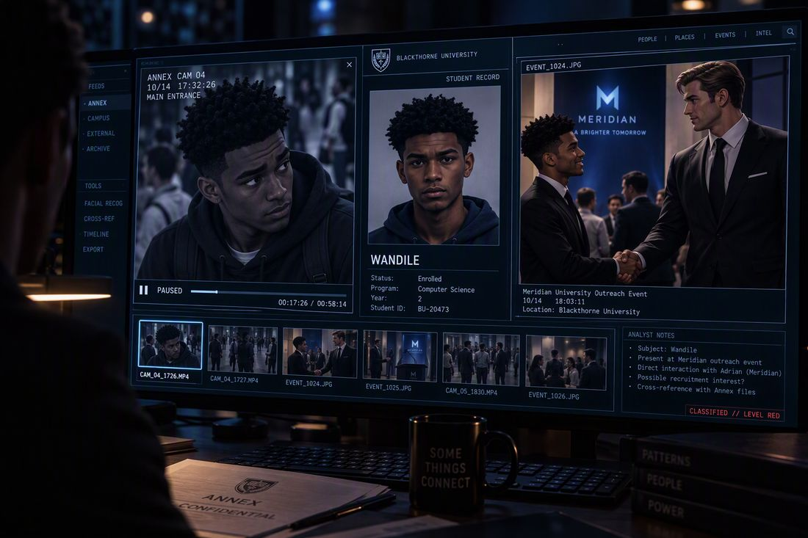
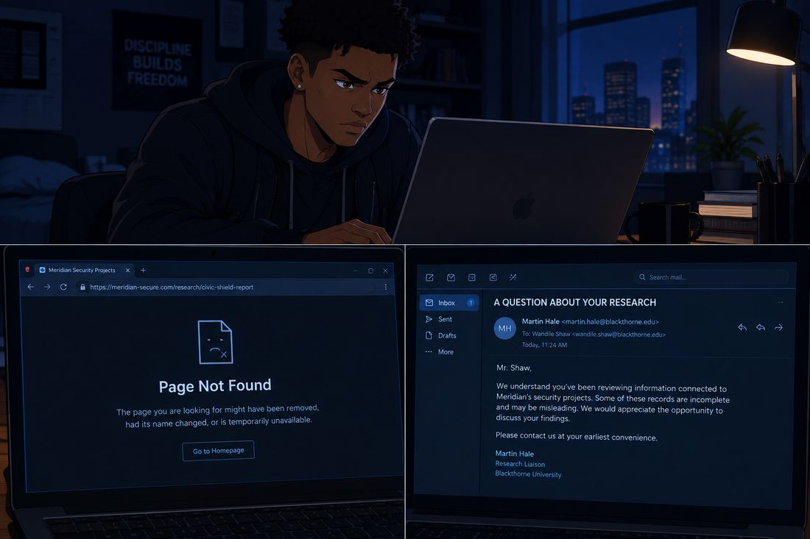
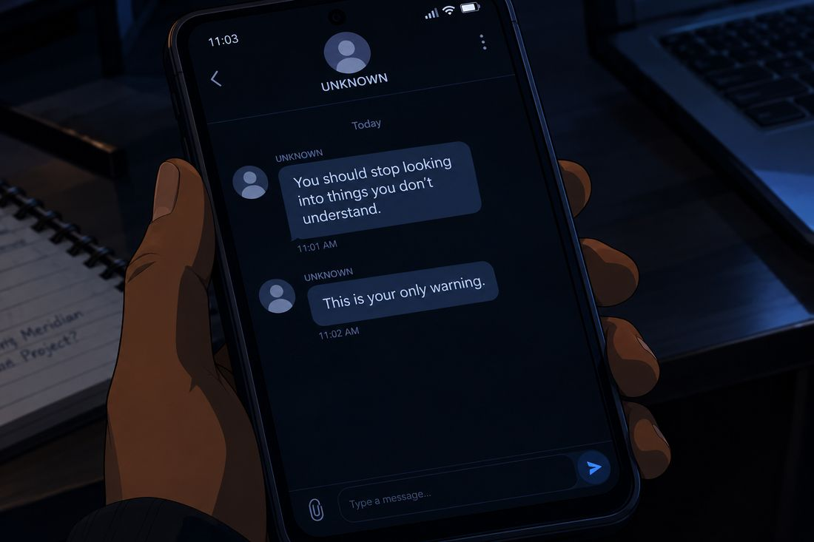
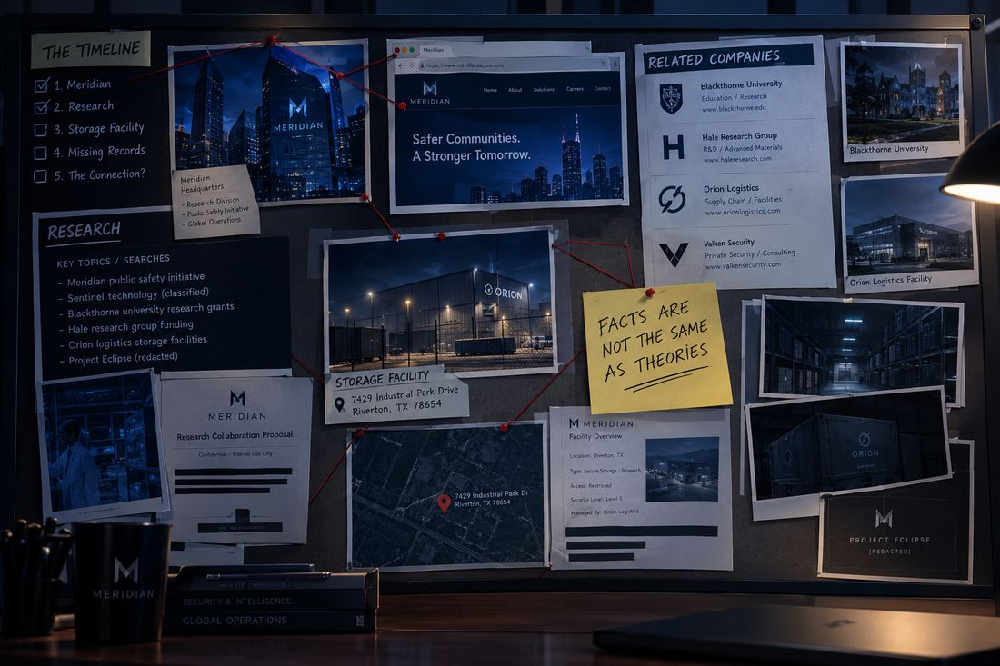
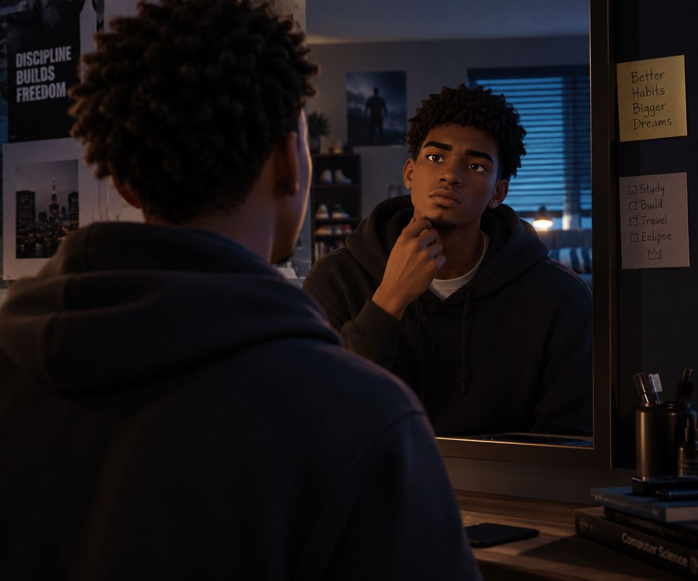
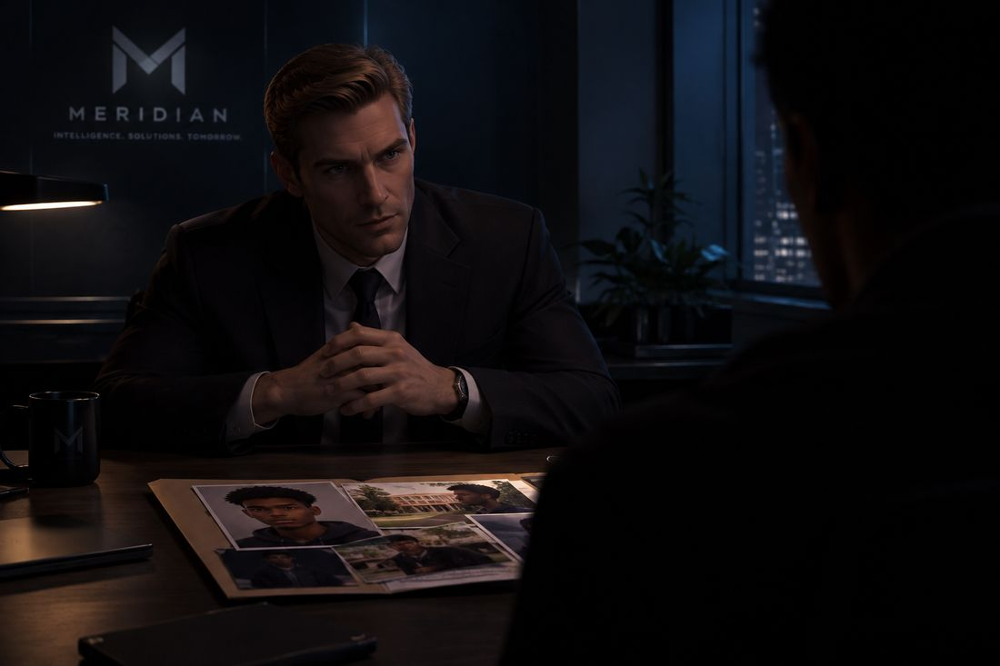
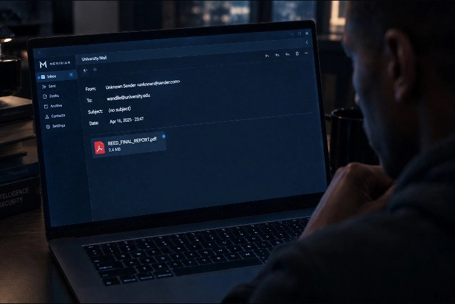
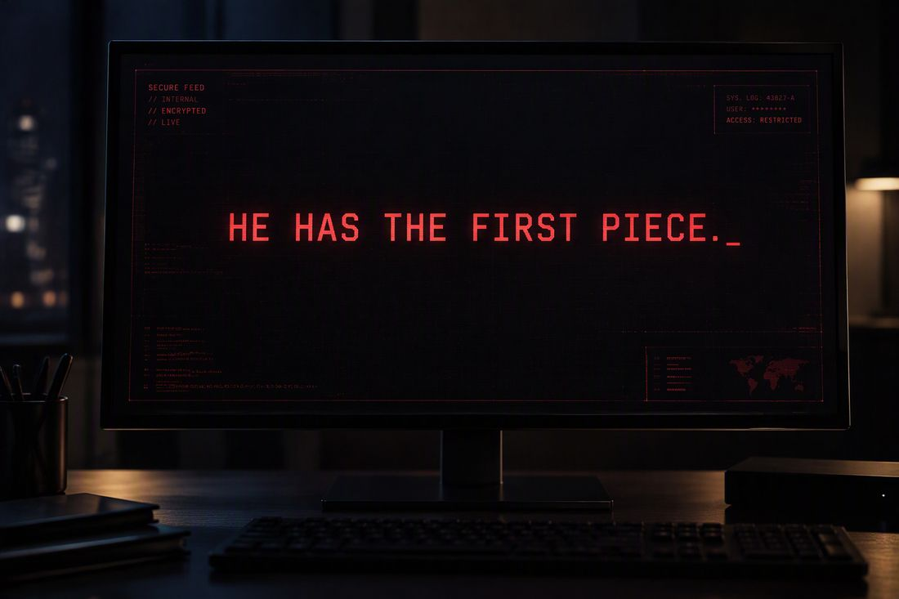

ECLIPSE
Episode 2 · Loose Ends
Cold Open
Black Screen
6:12 AM

BLACK SCREEN.
A keyboard clicks.
A monitor illuminates a dark room. On the screen is a paused security recording from the Meridian annex.
The footage zooms in on a young man standing across the street.
Wandile.
A second window displays his university photograph, student details, and the picture of him shaking hands with Adrian Voss.
A voice speaks from somewhere in the room.
“Is this the person Mr. Voss met yesterday?”
Another voice answers.
“Yes. Wandile Shaw. Computer science student.”
“Does he know anything?”
“We don't know yet.”
The first person studies the footage again.
“Then let's find out.”
The screen goes black.
Chapter 1
The Worst Lie Ever
8:32 AM · Blackthorne University
Wandile arrives on campus carrying a coffee and looking like he hasn't slept.
Which, technically, he hasn't.
He spent half the night organising his research and the other half wondering whether Meridian had identified him.
Ethan spots him near the lecture hall.
“Bro. You look terrible.”
“Good morning to you too.”
“I'm serious. Did you sleep?”
“Yes.”
Ethan narrows his eyes.
“How many hours?”
Wandile takes a sip of coffee.
“That's a very personal question.”
“That's a very suspicious answer.”
They walk toward the café, where Olivia and Charlotte are already sitting.
Olivia looks up.
“Wandile, you missed our messages yesterday.”
“I was busy.”
“Busy doing what?”
“Things.”
Charlotte slowly puts down her phone.
“Things?”
“Important things.”
Ethan sits back, delighted.
“Oh, this is good. He's keeping secrets now.”
Wandile gives him a warning look.
“Don't you have a lecture?”
“Not until ten.”
“It's nine forty-five.”
Ethan jumps up.
“WHY DIDN'T YOU SAY THAT?”
He grabs his bag and rushes off.
Charlotte watches him go.
“He's going to fail.”
“He'll be fine,” Olivia says.
Then she turns back to Wandile.
“Seriously, though. You've been distracted all morning.”
Wandile shrugs.
“Just have a lot on my mind.”
Olivia studies him for a moment but doesn't push.
“Okay. But if something's wrong, you can tell us.”
For a second, he considers it.
Then he remembers the security camera, the vehicle outside the annex, and the stranger who might now be looking for him.
“Yeah,” he says quietly. “I know.”
He hates lying to his friends.
But he doesn't know who he can trust yet.
Chapter 2
The First Warning
11:16 AM · Wandile's house

Wandile opens his laptop and checks his research folder.
Something is wrong.
One of the public reports he bookmarked last night has disappeared.
He searches for it again.
Nothing.
He checks another link.
Page not found.
A third source now redirects to an unrelated company website.
He leans forward.
“No way.”
He checks his notes. The information is still there, but the original sources are vanishing one by one.
Then an email arrives.
SUBJECT: A QUESTION ABOUT YOUR RESEARCH
The sender's address appears to belong to a legitimate university research office.
The message is short.
“Mr. Shaw,
We understand you've been reviewing information connected to Meridian's security projects. Some of these records are incomplete and may be misleading. We would appreciate the opportunity to discuss your findings.
Please contact us at your earliest convenience.”
There is a name at the bottom.
Martin Hale — Research Liaison
Wandile reads it twice.
He never contacted the university research office about Meridian.
He never told anyone what he was investigating.
So how did they find out?
He opens the email's technical details and checks what he can. Nothing immediately proves the message is fake, but the timing is far too convenient.
He doesn't reply.
Instead, he saves the email and searches for Martin Hale.
The man's professional profile looks ordinary. University connections. Corporate research partnerships. A few photographs from conferences.
Then Wandile finds something interesting.
Martin Hale previously worked for a company that was acquired by a Meridian subsidiary.
Three years ago.
Wandile leans back.
“Okay, Martin. Who are you really?”
His phone buzzes.
An unknown number.

Wandile stares at the message.
A second message arrives.
For a few seconds, he doesn't move.
Then he takes a screenshot, saves it, and places his phone face down.
He isn't going to let a text message scare him away.
But he's finally beginning to understand that someone knows he's investigating.
And whoever it is has found him much faster than he expected.
Chapter 3
A Very Public Smile
1:40 PM · Meridian headquarters
Adrian Voss stands before a group of executives in a glass-walled conference room.
A presentation displays Meridian's newest public safety initiative.
One executive brings up the incident at the annex.
“We've identified a possible observer from last night.”
Adrian looks up.
“An employee?”
“No. A student. We believe he may have been researching some of our public records.”
“Has he done anything illegal?”
“No.”
“Has he threatened anyone?”
“No.”
“Then I don't want anyone making this into a larger issue than it is.”
The executive hesitates.
“Of course.”
Adrian closes the report.
“Find out what information he has. If there's a misunderstanding, correct it. We are not in the business of intimidating students.”
He says it so naturally that the room accepts it.
But after the meeting, the executive returns to his office and makes a separate call.
“The student has received the message.”
A pause.
“No, Mr. Voss hasn't authorised anything beyond identifying him.”
Another pause.
“I understand.”
The executive ends the call.
For the first time, we see that Meridian's operations don't always follow Adrian's public instructions.
Someone inside the organisation is acting independently.
And Wandile has accidentally attracted their attention.
Chapter 4
The Friends' Intervention
4:05 PM · Campus café
Charlotte places a notebook on the table.
“Emergency meeting.”
Wandile looks up from his laptop.
“What did Ethan do?”
“Why is it always me?” Ethan asks, arriving with a sandwich.
“Because it's usually you,” Olivia replies.
Charlotte points at Wandile.
“This meeting is about him.”
Wandile slowly closes his laptop.
“Oh, fantastic.”
Olivia folds her arms.
“You've been late, distracted, and disappearing between classes. Yesterday, you left our group chat in the middle of a conversation.”
“My phone was on silent.”
“You replied to Ethan's message three minutes later.”
Ethan nods. “Caught in 4K.”
Wandile looks between them.
“Have you three considered getting hobbies?”
“We have one,” Charlotte says. “Investigating why you're acting weird.”
Despite himself, Wandile laughs.
For a moment, he almost tells them about the messages.
Almost.
But if Meridian is watching him, involving his friends could put them in the middle of something they never asked for.
“I'm dealing with a personal project,” he says. “It's complicated, and I'm trying to figure it out before I talk about it.”
Olivia studies him.
“Is it dangerous?”
He hesitates just a little too long.
Charlotte notices.
“Wandile.”
“I don't think so.”
“That's not the same as no,” Olivia says.
He looks down at the table.
“I know. I'm being careful.”
The three exchange glances.
Ethan finally breaks the silence.
“Okay. But if your personal project turns out to be building a robot army, I'm claiming the first robot.”
Wandile shakes his head.
“You're not getting a robot.”
“Then why am I even your friend?”
The tension breaks. They return to their usual teasing.
But Olivia isn't entirely convinced.
And she isn't going to forget that hesitation.
Chapter 5
Follow the Money
7:22 PM · Wandile's house

Wandile has a new rule.
No visiting suspicious buildings.
No approaching security guards.
No following strange vans.
For now, he will work from home and stick to information he can verify.
He opens his research timeline and begins looking at the companies connected to Meridian.
The missing researcher, Dr. Elias Reed, worked on a project called CIVIC SHIELD.
Officially, Civic Shield was designed to help emergency services coordinate during major incidents.
But the project was cancelled before its final public launch.
Why?
Wandile finds a financial report indicating that a private subsidiary continued receiving money after the cancellation.
The payments were divided among several contractors.
One of those contractors now manages security for buildings owned by a company connected to Meridian.
He draws a line between the entries.
Then another.
A pattern starts to form.
He finds a public filing for a storage facility on the edge of the city. The facility belongs to one of the contractors, and its ownership changed shortly after Dr. Reed disappeared.
Wandile writes the address down.
He pauses.
The old version of him would already be putting on his shoes.
Instead, he searches for the property records, the business registration, and the contractor's public contracts.
He creates a list of what he knows and what he only suspects.
At the top, he types:
FACTS ARE NOT THE SAME AS THEORIES.
He stares at the sentence, then nods to himself.
“Okay. That's a start.”
His phone buzzes again.
This time, it's Olivia.
He looks at his research.
Then at the message.
For the first time all day, he closes the laptop willingly.
“Fine,” he mutters. “One normal evening.”
He has no idea how difficult that is about to become.
Chapter 6
The Man in the Car
9:11 PM · Outside a restaurant
Wandile steps outside to take a phone call from his mother.
The street is busy. Cars move through the intersection, music drifts from a nearby café, and people pass under the streetlights.
“I'm fine, Mom,” he says. “Just busy with college.”
She asks whether he's eating properly.
“Yes.”
Whether he's sleeping enough.
“Absolutely.”
A pause.
“Wandile.”
He sighs.
“I'm working on it.”
His mother reminds him that he doesn't have to handle every problem by himself.
He looks through the restaurant window at his friends laughing around the table.
“I know, Mom.”
After the call, he notices a dark sedan parked across the street.
The driver appears to be looking down at a phone.
Wandile doesn't think much of it.
He turns back toward the restaurant.
Then he catches the reflection in the glass.
The driver has raised his head.
Looking directly at him.
Wandile turns around.
The driver looks away.
A traffic light changes. Cars move through the intersection, briefly blocking his view.
When the road clears, the sedan is gone.
Wandile stands there for a moment.
He could be imagining things.
He could be letting the messages get to him.
But when he returns inside, he chooses a seat where he can see the entrance.
Olivia notices.
“You okay?”
“Yeah.”
She glances toward the window.
“Are you sure?”
Wandile forces a small smile.
“Just thinking.”
She doesn't believe him.
But she lets him sit down.
For now.
Chapter 7
A Different Kind of Investigation
11:38 PM · Wandile's house

The house is quiet.
Wandile stands in front of his bedroom mirror, studying himself.
He looks like a normal college student.
Because he is one.
He has no special abilities. No extraordinary strength. No secret training that makes him immune to mistakes.
And yet, someone has decided he's worth watching.
He returns to his desk and opens the research folder.
The unknown messages sit beside the email from Martin Hale.
He could stop.
Delete everything, focus on college, and pretend none of this happened.
It would be the sensible decision.
But Dr. Reed is still missing. The records are disappearing. And someone is trying to frighten him away from questions that should have ordinary answers.
Wandile opens a new document.
INVESTIGATION 002 — THE WARNING
He lists the events in order.
- The Meridian annex observation.
- The disappearing public records.
- The email from Martin Hale.
- The anonymous warning.
- The dark sedan outside the restaurant.
He pauses before adding the final entry.
He can't prove the sedan was connected to Meridian.
So he marks it UNCONFIRMED.
Then he opens a new page.
At the top, he types:
WHAT I NEED
- Verifiable evidence connecting the companies.
- Reliable information about Dr. Elias Reed.
- A better understanding of Civic Shield.
- A way to protect my identity while investigating.
He looks at the fourth item for a long moment.
“That's going to be a problem.”
His eyes move to the camera on his desk, the spare laptop, and the small collection of electronic components he uses for university projects.
An idea begins to form.
Not a costume.
Not a superhero identity.
Just a way to work more carefully, protect his information, and stop leaving everything vulnerable on a single computer.
He starts sketching a basic design for a secure workstation.
It's a small step.
But it is the first time Wandile begins thinking like someone who intends to keep investigating for the long term.
Chapter 8
The Real Threat
12:26 AM · An undisclosed Meridian office

Martin Hale sits across from a man whose face remains outside the light.
A folder lies on the desk between them.
Inside are photographs of Wandile at the university, outside the Meridian annex, and entering the restaurant.
Hale looks uncomfortable.
“You said this was a routine identification request.”
“It was.”
“You sent him a warning?”
The man says nothing.
Hale shifts in his seat.
“Mr. Voss specifically said not to intimidate him.”
“Mr. Voss has a business to run. He cannot personally supervise every decision.”
“He'll find out.”
The man closes the folder.
“Then we will explain that we were protecting Meridian's interests.”
Hale looks at the photographs again.
“He's a student.”
“And students grow up.”
The man stands and walks toward the door.
“Find out what he knows about Civic Shield. Nothing more. For now.”
Hale remains seated, uneasy.
The man stops at the doorway.
“And Martin?”
“Yes?”
“If the student discovers something he shouldn't, I want to know before Mr. Voss does.”
The door closes.
Hale looks down at the folder.
For the first time, he understands that this operation has moved beyond ordinary corporate secrecy.
And he may already be too involved to walk away.
Chapter 9
The File
1:03 AM · Wandile's bedroom
Wandile finishes setting up a separate, password-protected research environment.
It's not a miracle solution. He knows that. If someone has enough access or resources, he can still make mistakes and expose himself.
But at least he's taking the problem seriously.
He transfers his notes and saves a clean copy of the evidence he's gathered.
Then an alert appears on his laptop.
A new file has arrived in his university email inbox.
No message.
No explanation.
Just an attachment named:

Wandile freezes.
He didn't request it.
He doesn't recognise the sender.
He does not open the attachment.
Instead, he checks the email details and takes screenshots of the message. He records the time and sender information, then moves the message into a separate folder.
His heart is beating faster.
Why send him this?
Whoever is behind the warning could be trying to help him.
Or they could be trying to lead him somewhere.
He searches the filename using public sources.
Nothing.
He checks the document's visible properties without opening it.
The metadata suggests the file was created several months ago.
The title is consistent with the project records he has already found.
But that doesn't prove the document is genuine.
Wandile looks at the screen.
“Who are you?”
No answer.
He creates a note:
DO NOT TRUST THE SOURCE. VERIFY THE CONTENT.
He saves everything and closes the laptop.
Tomorrow, he'll look for a safe way to establish whether Dr. Reed's report is authentic.
Tonight, he has learned enough.
Someone inside Meridian knows he's investigating.
Someone else may be trying to help him.
And he has no idea which possibility is more dangerous.
Chapter 10
The Name on the Screen
1:42 AM · Meridian headquarters
Adrian Voss stands alone in his office.
A report has appeared on his desk, detailing the activity around the annex.
He reads the summary.
An unidentified observer.
A student who has examined public records.
An internal warning sent without his approval.
Adrian's expression hardens.
He calls his executive.
“Who authorised contact with this student?”
“We're still establishing that.”
“I told you to identify him, not frighten him.”
“I understand.”
“No. I don't think you do.”
Adrian ends the call.
For a moment, he looks out across the city.
He doesn't know what Wandile has discovered. He doesn't know about the anonymous messages, the missing report, or the investigation taking shape in that bedroom across town.
But he knows someone inside Meridian is acting without proper authorisation.
And that may be a threat to his organisation just as serious as the student asking questions.
He opens the photograph from the university event.
Wandile stands beside him, smiling politely.
Adrian studies it briefly.
Then he closes the file.
“Find the leak,” he says quietly.
END OF EPISODE 2
After the Credits
Delivery Confirmed
2:17 AM · An unknown location

A monitor displays a single line:
REED FINAL REPORT — DELIVERY CONFIRMED
A hand reaches toward the keyboard.
The screen changes to a photograph of Wandile.
Then a new message appears:
HE HAS THE FIRST PIECE.
A reply arrives almost immediately.
THEN LET HIM FIND THE SECOND.
The monitor goes dark.
END